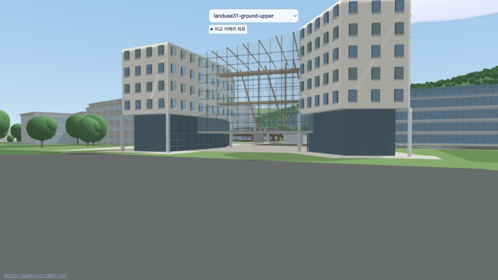
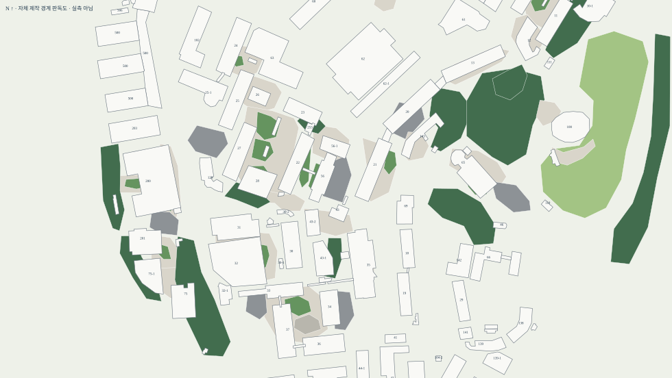
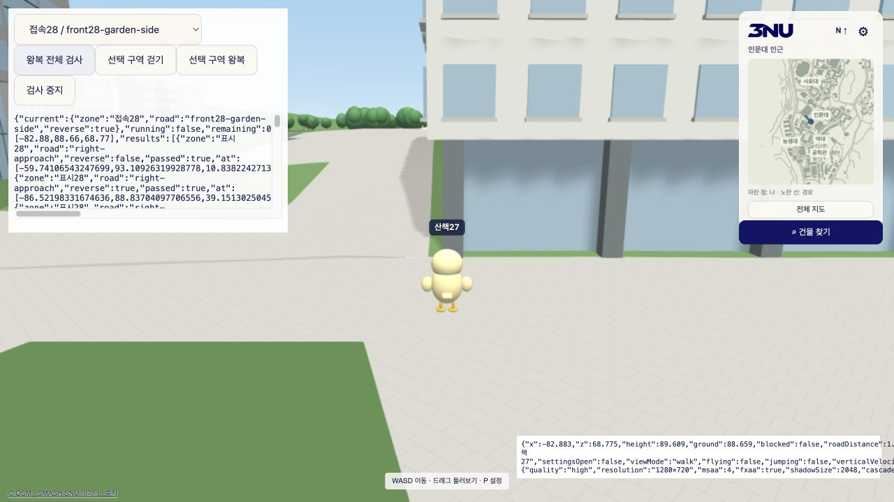
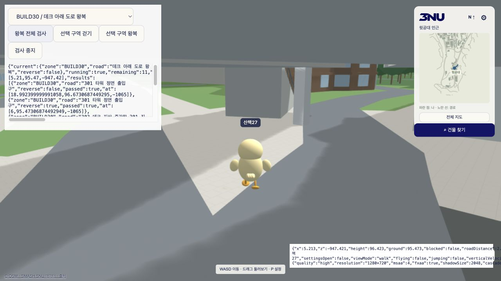

3NU BUILD31 · 건물 사이 공간을 면으로 구분
9개 구역에 79개의 포장·중정·차량 공간·식재·숲 경계를 정의하고 기존 바닥을 교체했습니다. 건물·도로망·건축적 높이 관계는 유지했습니다.
구현·대표 동선 검증은 9개 구역 모두 진행했습니다. 다만 경계는 영상 판독에 따른 추정이며, 기존 건물 윤곽 오차·수관 아래 가림·사진 밖 영역이 남아 있어 전체를 정밀 재현 완료로 보고하지 않습니다.
첨부 위성사진 범위 · 북쪽이 위인 정사영
하나의 축척과 방향을 사용했습니다. 사진 비율과 브라우저 비율 차이는 여백으로 처리했습니다. 이미지나 건물별 축척을 늘이거나 비틀지 않았습니다.
구역별 상태
면 개수는 작성된 경계 개수입니다. 잘린 조각 수나 이름 연결 수를 완료 건물 수로 세지 않았습니다.
자연대 22–28·56·56-1동
부분 완료
26·27·28동 사이 넓은 포장과 세 식재 섬, 24동 중정, 56동 차량 공간, 56-1동 앞마당을 분리했습니다.
26동 일부 윤곽과 연결부가 실제 사진과 다릅니다. 수관 아래 경계는 추정이며 기존 얇은 보행로가 중정 안에 남습니다.
농생대 200·201·75-1동
부분 완료
동측 앞마당·차량 공간, 동 사이 포장과 식재, 75-1동 진입부 및 서측 숲을 구분했습니다.
기존 200동은 영상의 두 동과 다른 큰 꺾인 윤곽입니다. 건물을 유지하므로 그 윤곽과 충돌하는 실제 포장 범위는 제외했습니다. 농식광장의 정확한 시설명·전체 경계는 확정하지 않았습니다.
공대 30–37동·붉은광장
부분 완료
31·32동 사이와 33·34·36·37동 사이를 넓은 포장·중정 식재·차량 구역으로 재분할했습니다. 붉은광장은 이름만으로 붉게 칠하지 않았습니다.
기존 32동·36동·37동 윤곽의 오차와 기존 길이 식재 경계와 충돌하는 부분이 있습니다. 골목 선형·폭과 이름이 가리키는 광장 전체 경계는 후속 확인이 필요합니다.
관정관·약학관
부분 완료
약학관 전면 포장, 서비스·차량 구역, 동측 숲과 식재를 분리했습니다. 관정관 뒤 하부 통로·상부 보행면은 보존했습니다.
20동 기존 위치·윤곽 차이와 수목 아래 바닥이 불확실합니다. 일부 저층부의 기존 지면 접합은 이번 바닥 재분류로 정밀 보정한 것이 아닙니다.
버들골·풍산마당·교수회관
부분 완료
열린 잔디의 비대칭 윤곽, 양쪽 밀집 수목군, 교수회관 앞 포장·차량 공간과 공연장 접근 포장을 나눴습니다.
수목 아래 실제 지면 재료는 확인할 수 없어 숲 바닥으로 추정했습니다. 교수회관 기존 평면 차이와 공연장 세부 구조는 유지했습니다.
인문대 1–5동·자하연
부분 완료
추가 위성사진으로 1·2동 사이 포장과 정원, 3·4동·5동 주변 중정, 자하연 북측 접근면을 반영했습니다.
아방궁의 수목 아래 세부 경계는 추정입니다. 자하연 수면·목재 데크는 유지했고 물가 전체를 새로 측량한 것은 아닙니다.
사회대
부분 완료 · 아고라 자료 부족
추가 위성사진에 드러난 16동 동측 주차 공간, 남측 앞마당, 101동 동측 포장과 정원을 반영했습니다.
서측 공사 구역을 완공된 아고라로 간주하지 않았습니다. 그곳의 최신 완공 항공·지상 자료가 필요합니다.
301·302·303동
부분 완료 · 남측 자료 부족
직접 확인했던 BUILD30 위성사진을 사용해 303동 서측 주차장, 301동 차량 접근부, 302동 북측 앞마당과 주변 숲을 반영했습니다.
302동 남측은 참고 화면 밖이므로 변경하지 않았습니다. 데크·연결교·건물 접속부는 유지했으며 위아래 통행을 별도로 검사했습니다.
BUILD30 수정 전 · 동일 좌표·지상 공간
BUILD31 수정 후 · 동일 좌표·지상 공간 사범대
부분 완료
추가 위성사진에 드러난 9–12동 내부 중정·식재, 13동 접근 포장, 동측 수목군을 반영했습니다.
나무 아래 가려진 포장 경계와 작은 진입 계단은 추정 또는 기존 상태 유지입니다. 확인되지 않은 별도 광장을 만들지 않았습니다.
정렬과 참고 자료
1 단위 = 1m, X 동쪽·Z 북쪽·Y 위쪽, 기준 경위도 126.952 / 37.459입니다. 첨부 영상은 공통 유사변환으로 정렬했고 추가 영상도 같은 모델 좌표계에서 대조했습니다. 아래 점들은 분산된 지붕·식별 시설의 수동 대응점입니다. 지상 모서리가 가려진 곳의 지붕 편차를 실측 오차로 해석하지 않았습니다.
농생대 200동의 덩어리 구성, 공대 32·36·37동, 약학관 20동·교수회관은 기존 모델과 영상의 차이가 남습니다. 바닥을 비틀어 맞추지 않고 기존 건물을 제외한 영역만 교체했습니다. 기준점·좌표·진단 잔차
자체 제작 경계 판독도와 출처
아래 도식은 구현에 사용한 해석 경계입니다. 위성사진 원본이 아니며 독립적인 정확도 검증값도 아닙니다. 회백색=포장, 진회색=차량 공간, 연두색=잔디, 중간 초록=식재, 짙은 초록=수목군입니다.

인문대 도식 · 사회대 도식 · 사범대 도식 · 상부 공대 도식
외부 이미지는 관찰 자료로만 사용했습니다. 공개 텍스처·보고서에는 원본 캡처를 포함하지 않았습니다. 지도 글자·차량·그림자를 바닥 무늬로 복제하지 않았습니다.
기존 면 교체와 이동 검증
기존 지면 161개를 분할·교체하고, 수정 범위 밖 조각 291개는 보존했습니다. 새 구획은 높이 경계에 맞춰 289조각으로 컴파일했습니다. 같은 공간 위에 새 판을 얹지 않았습니다.
- 도로·보행로·운동시설·수면, 건물 바닥 윤곽, 계단·데크 영역을 새 면에서 제외했습니다.
- 기존 높이 보정의 적용 순서와 값을 그대로 분할해 렌더링과 이동이 같은 높이를 참조합니다. 지면 높이·건물·도로망을 변경하지 않았습니다.
- 실제 겹침 검사: 새 면 상호 간, 도로, 건물, 건축 보행면과의 중복 면적 0.
- 512,115개 지면 정점과 이동 높이 차이 최대 0.000025m 미만. 이는 계산 일관성 검사이며 실제 측량 정확도가 아닙니다.
- 컴파일 재실행 결과 해시 동일. 면과 수목이 재생성 때 누적되지 않습니다.
- 브라우저에서 새 구역 18회 + 도서관 20회 + 공학관·데크 18회 = 56회 방향별 걷기 완료. 점프 없이 통과했습니다.
- 별도 이동 계산: 같은 56회 경로, 30/60/120fps에서 27개 점프 착지, 데크 위·아래 층 분리 검사 통과.
- 실제 UI에서 점프 착지, 백학 상승 후 리오로 바꿔 지상 복귀 확인. 닉네임·P 설정·미니맵 유지.
검사는 선정한 대표 경로의 결과입니다. 캠퍼스의 모든 출입구나 79개 면의 모든 점을 걷기 검증했다고 주장하지 않습니다. 기존 지형의 모든 결함을 이번 작업에서 해결한 것도 아닙니다.

기존 도서관 다층 동선 왕복
공학관 데크 위·아래 회귀 검사새 구역 걷기 · 도서관 회귀 · 공학관 회귀 · 이동 계산 · 겹침 검사 · 지면 검사 · 재생성 검사 · 조작 검사
다음 도로·보행로 정비로 넘기는 항목
- 자연대 22–28·56·56-1동 — 26–28동 중정 안의 기존 가는 보행로와 새 넓은 포장의 경계 통합; 56동 서비스 진입선 검토
- 농생대 200·201·75-1동 — 200동 기존 윤곽 불일치 해결 후 앞마당 재조정; 201·75-1동 진입로 폭 전환
- 공대 30–37동·붉은광장 — 32동 과대 윤곽 및 36·37동 평면 차이와 충돌하는 중정·녹지 경계; 기존 회색 띠 정리
- 관정관·약학관 — 약학관 차량 진입부의 도로–포장 선형; 상부·하부 층 분리를 계속 보존
- 버들골·풍산마당·교수회관 — 공연장 접근로와 교수회관 차량 공간의 폭·합류; 숲 속 미확인 길을 새로 만들지 않음
- 인문대 1–5동·자하연 — 1·2동 및 5동 앞 포장에 남은 기존 가는 보행로 표현 통합
- 사회대 — 아고라 서측 공사 구역 최신 영상 확보 후 연결선 결정
- 301·302·303동 — 302동 남측 추가 위성사진 확보; 데크 아래 지상 도로는 별도 유지
- 사범대 — 수관 아래 출입구 연결선의 지상 사진 확인 후 정비
구역별 상태 · 모든 면의 유형·출처·높이 정책 · 도로 후속 목록 · 동일 시점 좌표